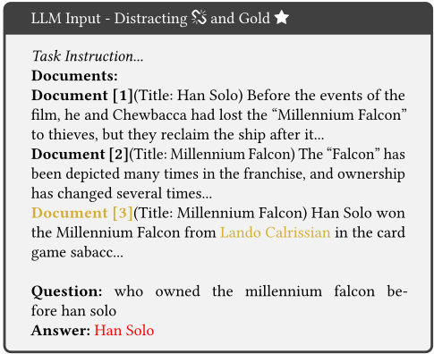
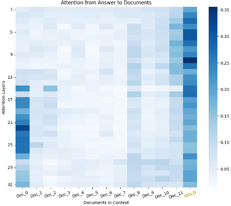

噪声的力量：重新定义 RAG 系统的检索
论文系统研究了 RAG 中检索组件应向 LLM 提供什么样的文档：作者将文档分为 gold、relevant、distracting、random 四类，在 NQ-open 数据集（约 2100 万 Wikipedia 文档）上用 Contriever/BM25 检索器配合 Llama2、MPT、Phi-2、Falcon 等 7B 模型，考察文档类型、数量与位置对生成准确率的影响。关键结论有三：一是检索得分高但不含答案的 distracting 文档会显著损害准确率，仅加入 1 个即可下降最多 25%，且换用 hard negatives 训练的检索器也无法缓解；二是 gold 文档应放在紧邻 query 的位置，放中间最差；三是反直觉地，加入与问题无关的随机文档反而能提升准确率最多 35%，换成 Reddit 语料甚至随机词组成的无意义句子依然有效。据此作者提出实用策略：先检索少量（3-5 个）文档，再用随机文档填满上下文，并以注意力熵增加 3 倍作为可能的机理解释。
RAG 系统中检索器应向 LLM prompt 提供何种特征的文档：文档的类型（gold/relevant/distracting/random）、数量与在上下文中的位置如何影响生成准确率？现有检索器按相似度返回 top-k 文档的做法对 RAG 是否最优？
在 NQ-open（OpenQA 任务）上构建两步 RAG 实验框架：用 Contriever（dense）与 BM25（sparse）配合 FAISS 索引检索，LLM（Llama2、MPT、Phi-2、Falcon，7B、4-bit 量化、zero-shot、greedy 解码）生成答案；将文档划分为 gold/relevant/distracting/random 四类，在 oracle 与真实检索两种设置下系统变换 prompt 中文档的类型、数量与位置组合，用答案包含式二值准确率（Wilcoxon 显著性检验）评测，并结合注意力热图与注意力熵分析机理。
加入 1 个 distracting 文档即使准确率急剧下降，峰值降 0.24（-25%）；随数量增加，部分 LLM 准确率下降超过 0.38（-67%）
oracle 设置下加入随机文档，最佳配置（near）下 MPT 准确率提升 0.08（+36%）
真实检索设置下，在检索文档基础上补充随机文档几乎总是有益，4 个检索文档时准确率提升 0.07（+35%）；Falcon 在非 oracle 设置下同样受益
随机文档换成 Reddit（Webis-TLDR-17）语料比 Wikipedia 随机文档再提升 0.023（+9%）；由随机词组成的无意义句子同样带来提升
gold 文档位置影响显著：Llama2 在 18 个 distracting 文档下，near/mid/far 准确率分别为 0.37/0.23/0.17
BM25 平均准确率比 Contriever 高 3-4 个百分点；top-k accuracy（k=1,2,4,10）BM25 为 0.2966/0.4105/0.5237/0.6663，Contriever 为 0.2502/0.3569/0.4784/0.6085
ADORE（dynamic hard negatives 训练）在 1/2/4 个 distracting 文档下准确率为 0.4068/0.3815/0.3626，显著低于无 distracting 的 0.5642 基线，说明仅更换 dense 检索器无法缓解干扰问题
最佳实用策略：先检索 3-5 个文档，再用随机文档填满上下文
引入随机文档后系统注意力熵增加 3 倍（作者提出的可能机理解释，与 entropy collapse 相关）
自称首个对 RAG 检索策略的全面系统研究；挑战 IR 常见假设——语义最接近 query 的高分文档若不含答案反而有害，而完全无关的随机噪声文档在正确位置上能提升准确率；并给出'少检索+随机填充'的检索器权衡策略与基于注意力熵（entropy collapse）的初步机理解释。
相关度级别：high
命中能力域：3.1 上下文工程与记忆 | 3.2 提示工程 | 3.5 评测与可靠使用
理由：直接命中 3.1 上下文工程与记忆的核心技术（RAG/检索增强、上下文组织与文档排布策略），同时涉及 3.2 提示工程（prompt 中上下文构成、文档数量与位置设计）与 3.5 评测与可靠使用（RAG 实证评测方法与可靠性发现）。团队构建知识库问答等 RAG 应用时，检索文档数量控制、位置排布与干扰文档过滤是日常工程决策，本文的反直觉结论可直接指导检索与 prompt 组装策略，其四类文档划分也提供了可复用的 RAG 评测思路。
建议动作：深入精读并做内部分享
arXiv:2401.14887v4 [cs.IR] 2024年5月1日
Florin Cuconasu ∗
cuconasu@diag.uniroma1.it 罗马第一大学（Sapienza University of Rome） 意大利罗马
Giovanni Trappolini ∗ trappolini@diag.uniroma1.it 罗马第一大学（Sapienza University of Rome） 意大利罗马
filice.simone@gmail.com 技术创新研究院（Technology Innovation Institute） 以色列海法 campagnano@di.uniroma1.it 罗马第一大学（Sapienza University of Rome） 意大利罗马
Nicola Tonellotto nicola.tonellotto@unipi.it 比萨大学（University of Pisa） 意大利比萨 Federico Siciliano siciliano@diag.uniroma1.it 罗马第一大学（Sapienza University of Rome） 意大利罗马 Yoelle Maarek yoelle@yahoo.com 技术创新研究院（Technology Innovation Institute） 以色列海法 Fabrizio Silvestri fsilvestri@diag.uniroma1.it 罗马第一大学（Sapienza University of Rome） 意大利罗马
检索增强生成（RAG），大语言模型（LLM），信息检索
Florin Cuconasu∗、Giovanni Trappolini∗、Federico Siciliano、Simone Filice、Cesare Campagnano、Yoelle Maarek、Nicola Tonellotto 和 Fabrizio Silvestri。2024。《噪声的力量：重新定义 RAG 系统的检索》（The Power of Noise: Redefining Retrieval for RAG Systems）。载于第 47 届 ACM SIGIR 信息检索研究与发展国际会议论文集（SIGIR '24），2024 年 7 月 14-18 日，美国华盛顿特区。ACM，美国纽约州纽约市，11 页。https://doi.org/10.1145/3626772.3657834
大语言模型（Large Language Models, LLMs）[9] 在各类任务中展现出了前所未有的出色能力，涵盖从文本生成、复杂问答 [6] 到信息检索（Information Retrieval, IR）任务 [22, 57]。然而，LLMs 在处理长上下文方面存在局限 [52]，这一约束导致其更加依赖预训练知识。这一局限不仅限制了它们有效处理长篇语篇（如书籍或长对话）的能力，还增加了产生幻觉的概率，即模型生成事实错误或无意义信息的情况 [41]。为了提高 LLMs 生成回答的准确性，检索增强生成（Retrieval-Augmented Generation, RAG）已成为一种有前景的解决方案 [28]。RAG 的主要设计目标是通过让模型获取辅助信息来提升事实准确性，从而用 LLM 中未必记住的信息来增强原始提示（prompt）。这种方法的一个关键优势在于，它有助于用相关信息为提示提供依据，从而可能帮助 LLM 在推理时生成更准确的回答。从本质上讲，RAG 系统由两个基本组件构成：检索器（retriever）和生成器（generator）。检索器负责调用外部 IR 系统（稠密和/或稀疏），并将选定的结果提供给生成器组件。
本研究聚焦于 RAG 的 IR 方面，提出以下研究问题：“为了优化 RAG 系统的提示构建，检索器应具备哪些理想特性？当前的检索器是否理想？”。我们关注三种主要类型的文档
检索增强生成（Retrieval-Augmented Generation, RAG）近来作为一种扩展大语言模型（Large Language Model, LLM）预训练知识之外能力的方法而兴起，其做法是利用信息检索（Information Retrieval, IR）系统检索到的相关段落或文档来扩充原始提示（prompt）。RAG 在生成式 AI（Generative AI）解决方案中正变得日益重要，尤其是在企业环境中，或在任何知识不断更新、无法全部记忆于 LLM 之中的领域。我们在本文中提出，RAG 系统的检索组件——无论其是稠密的还是稀疏的——值得研究界给予更多关注；为此，我们首次对 RAG 系统的检索策略进行了全面而系统的考察。我们特别关注 RAG 解决方案中的 IR 系统应当检索何种类型的段落。我们的分析考虑了多种因素，例如提示上下文中所包含段落的相关性、它们的位置以及数量。本工作的一个反直觉发现是：检索器得分最高但与查询并不直接相关的文档（例如不包含答案的文档）会对 LLM 的有效性产生负面影响。更令人惊讶的是，我们发现向提示中添加随机文档可使 LLM 的准确率提升高达 35%。这些结果凸显了在将检索与 LLM 集成时研究恰当策略的必要性，从而为该领域的未来研究奠定了基础。 1
· 信息系统 → 信息检索中的新颖性。
1 代码和数据可在 github.com/florin-git/The-Power-of-Noise 获取
* 这些作者对本工作的贡献相同。
允许免费制作本作品部分或全部内容的数字或硬拷贝供个人或课堂使用，前提是这些拷贝并非以营利或商业优势为目的而制作或分发，且拷贝首页须带有本声明及完整的引用信息。本作品中第三方组件的版权必须得到尊重。对于所有其他用途，请联系所有者/作者。
© 2024 版权由所有者/作者持有。ACM ISBN 979-8-4007-0431-4/24/07. https://doi.org/10.1145/3626772.3657834
（或段落 2），即检索器可以返回的：相关（relevant）、干扰（distracting）和随机（random）。相关文档包含切题的信息，这些信息要么直接回答查询，要么可能为查询提供信息。干扰文档虽然不直接回答查询，但在语义或上下文上与主题相关联。例如，如果询问拿破仑的马是什么颜色，那么一段描述约瑟芬·德·博阿尔内（Joséphine de Beauharnais，拿破仑的第一任妻子）的马的颜色的段落，虽然不包含正确的信息，但会是高度相关的。随机文档与查询毫无关系，可以被视为检索过程中的一种信息噪声。我们研究的关键目标之一是确定每种类型文档的作用，以及它们为 LLM 有效性带来的相对价值。特别是，我们验证当在 LLM 场景中使用信息检索（IR）系统时，是否有必要重新审视其中一些普遍接受的假设。我们工作的主要贡献如下：
现代 LLM 时代的开端可以追溯到题为 "Attention Is All You Need" 的开创性论文 [52]。这项工作引入了 transformer 架构，这是一种采用注意力机制取代循环层的框架，使模型能够捕捉数据中的全局依赖关系。次年，BERT（Bidirectional Encoder Representations from Transformers）[22] 通过一种新颖的双向无监督语言表示，相较当时最先进水平取得了显著改进。基于 transformer 的模型的演进随着生成式预训练变换器（Generative Pre-trained Transformer，GPT）[37] 的开发而继续。其后继者 GPT-2 [38] 在此基础上以更大规模的模型进行扩展，并在无需任务特定训练的情况下，在多种语言任务上展现出更优的性能。随后的迭代版本 GPT-3 [9] 在模型规模和能力方面实现了进一步提升，尤其是在少样本学习（few-shot learning）领域。最后，近年来大型公开可用语言模型的产出激增。多个机构发布了各自的模型，其中最著名的有 Llama [49, 50]、Falcon [1]、Mosaic MPT [47] 和 Phi [16, 29]。此外，还存在针对特定语言进行微调的这些模型版本 [5, 10, 12, 17, 43]。这些模型的普及程度和质量正在扩展它们所应对的任务范围和愿景 [48, 54, 56]。
基础性的信息检索（Information Retrieval, IR）方法，例如 20 世纪 80 年代提出的向量空间模型（Vector Space Model）和 TF-IDF 评分 [42]，
2 我们在此交替使用“段落”（passage）或“文档”（document）这两个术语，用以指代 IR 系统的索引/检索单元。
是量化文本相似性的基础。这些检索方法的特点是使用高维且稀疏的特征向量，并且对一整代 IR 系统的发展起到了至关重要的作用。BM25 是当前最著名的迭代版本 [40]。IR 领域的一次重大演进是稠密检索器（dense retriever）的引入，它随着深度学习的进步而出现；这类检索器利用低维稠密向量进行文本表示，从而能够捕捉语义关系。这与传统 IR 方法（与稠密相对，被称为稀疏方法）形成对比，后者通常依赖词法匹配，难以实现语义匹配 [32]。在过去几年中，诸如 DPR [19] 及其他一些方法 [15, 24] 等稠密方法已经证明，它们能够与稀疏方法相抗衡。
检索增强生成（Retrieval-Augmented Generation, RAG）为人工智能（AI）领域引入了一种新方法，它结合了基于检索的模型与生成式模型两者的优势。RAG 的概念在 [28] 中被提出并得到推广，该工作提出了一个将稠密段落检索器（dense passage retriever）与序列到序列（sequence-to-sequence）模型相结合的模型，在知识密集型任务上展现了显著的改进。类似的方法/变体也在同期或随后不久被提出，例如 [2, 4, 8, 13, 21]；关于增强语言模型（augmented language models）的综述可参见 [33]。近年来，研究人员和从业者已开始探索这些 RAG 系统的内部工作机制。值得注意的是，[44, 51] 分析了不同类型的文档对级联 IR/自然语言处理（NLP）系统的影响。其他一些工作则尝试研究 Transformer 对其输入的关注（注意力）程度 [23, 30, 31, 39, 46]。[7] 研究了检索器相似度度量（similarity metric）的影响，发现该度量不足以支持推理。在 [25, 55] 中，作者分析了大语言模型（LLM）对外部证据（相对于内部记忆）的接受程度。在 [60] 中，他们测试了模型将引用落地（ground references）的（不）能力。
在本文中，我们希望首次对在 RAG 系统中使用检索器模块所产生的影响进行全面分析，研究若干关键因素的影响，例如应当用于增强 LLM 提示（prompt）的文档的类型、数量和位置。
在本文中，我们探讨 RAG 在问答（Question Answering）场景中的应用，这可以说是其最流行的应用。
开放域问答（Open-domain Question Answering, OpenQA）是指开发这样一类系统的任务：这些系统能够针对以自然语言提出的、不限于特定领域或预定义数据集的广泛问题，提供准确且与上下文相关的答案。一般而言，我们希望为查询 𝑞 找到一个答案 A。为此，我们从文档语料库 D = { 𝑑 1 , 𝑑 2 , . . . , 𝑑 𝑛 } 中提取信息，该语料库通常被假定规模较大。针对该任务的一种普遍做法是采用两步架构，通常由检索器（retriever）和推理器（reasoner，通常为生成器）组成。这种方法通过将过程划分为不同的阶段来应对 OpenQA 固有的复杂性：首先找到有可能解决该查询的合适文档集合，然后综合出一个可供问答（QA）系统用户使用的答案。
检索器在 OpenQA 任务中扮演着至关重要的角色。其目标是找到一个规模足够小的文档子集 D 𝑟，使推理器能够正确回答查询。在各种检索方法中，稠密检索器（dense retriever）因其在处理语义匹配方面的有效性而日益受到重视。稠密检索需要将文本数据转换为向量表示，这通常借助神经网络来实现，往往是基于 Transformer 的编码器，例如 BERT [22]。稠密检索器对查询 𝑞 和潜在源文档进行处理，生成相应的嵌入向量，即查询的嵌入 𝑞 以及每个文档 𝑑 𝑖 ∈ D 的嵌入 𝑑 𝑖。嵌入过程可以表示为：
其中，𝐸𝑛𝑐𝑜𝑑𝑒𝑟 𝑞 和 𝐸𝑛𝑐𝑜𝑑𝑒𝑟 𝑑 是基于神经网络的编码器，二者可能共享权重或架构，用于将文本数据映射到向量空间中。嵌入向量生成之后，检索过程便涉及计算查询嵌入与每个文档嵌入之间的相似度。最常见的方法是使用点积（dot product）[20]，其定义为：𝑠 ( 𝑞, 𝑑 𝑖 ) = 𝑞 · 𝑑 𝑖 。该分数通过度量二者在嵌入向量空间中的相似性来量化每个文档与查询的相关程度，分数越高表示相关性越大。根据这些分数，排名靠前的文档将被选出，交由生成器组件进行进一步处理。
第二步涉及一个负责合成答案的生成器组件，该组件通常通过大语言模型（LLM）实现。生成式语言模型的工作方式是：在给定先前 token 的条件下，预测下一个 token 的概率分布。对于给定的词序列 𝑤 1 , 𝑤 2 , . . . , 𝑤 𝑛 ，生成式语言模型旨在最大化该序列的似然，这可以利用概率链式法则表示为：
其中，𝑃 ( 𝑤 𝑖 | 𝑤 1 , 𝑤 2 , . . . , 𝑤 𝑖 - 1 ) 是在给定前序词序列 𝑤 1 , 𝑤 2 , . . . , 𝑤 𝑖 - 1 的条件下词 𝑤 𝑖 的条件概率。在 RAG 中，生成式语言模型将查询 𝑞 和检索到的文档 D 𝑟 作为输入，并通过依次预测序列中的下一个 token 来生成响应。更正式地，
其中，𝑝 𝜂 ( 𝑑 | 𝑞 ) 是检索组件，它为得分最高的文档提供一个（截断的）概率分布；而 𝑝 𝜃 ( 𝑦 𝑖 | 𝑞, 𝑑, 𝑦 1: 𝑖 - 1 ) 是一个由 𝜃 参数化的概率分布，它基于先前生成的 token、查询以及检索到的文档来生成当前 token；这一角色由 LLM 承担。在稠密检索的情况下，得分最高的文档的概率分布可能呈现为 𝑝 𝜂 ( 𝑑 | 𝑞 ) ∝ exp ( 𝑞 · 𝑑 ) 这类函数形式。基于我们对 RAG 任务的形式化描述，我们注意到生成组件 𝑝 𝜃 既依赖于一个给定的文本（即查询），也依赖于一个动态的文本（即检索到的文档集合）。我们将在接下来两节中研究改变检索到的文档集合对生成器、进而对整个端到端系统的影响。特别地，我们旨在找到检索器应当馈送给生成器的最佳文档集合 D 𝑟 ，以最大化系统的有效性。
在本节中，我们详细介绍实验框架。我们首先描述实验中使用的数据，随后讨论检索器可以返回并传递给 LLM 的文档类型。
自然问题（Natural Questions, NQ）数据集 [26] 是一个源自 Google 搜索数据的大规模真实查询集合。数据集中的每条记录由一个用户查询和包含答案的对应维基百科（Wikipedia）页面组成。NQ-open 数据集 [27] 是 NQ 数据集的一个子集，其不同之处在于取消了将答案与特定维基百科段落相关联的限制，从而模拟了类似于网页搜索的更一般化的信息检索场景。这种开放域特性对我们的实验设计产生了显著影响，尤其体现在文档的选择与分类上。遵循 Lee 等人 [27] 的方法，我们回答查询的主要数据源是截至 2018 年 12 月 20 日的英文维基百科转储（dump）。与稠密段落检索（Dense Passage Retrieval, DPR）方法 [20] 一致，该转储中的每篇维基百科文章被切分为 100 个词的互不重叠段落。开放域问答中的一个重大挑战是维基百科转储与数据集中问答对之间可能存在的时间错配，这可能导致数据集中答案缺失，正如 AmbigQA 研究 [34] 所强调的那样。为缓解这一问题，我们将原始 NQ 数据集中的金标（gold）文档整合到了我们的维基百科文档集合中。鉴于我们任务的开放域特性，可能还存在其他与查询相关的文档，即包含答案的文档，但我们不会将其视为金标。最终的数据集共包含 21,035,236 个文档，其中训练集有 72,209 个查询，测试集有 2,889 个查询。
在我们的研究中，我们根据文档与查询的相关性及关系，将文档划分为四种不同的类型，每种类型由一个独特的符号表示：
⋆ 金标文档（Gold Document）。金标文档以 ⋆ 标识，指 NQ 数据集中的原始上下文，具体而言即维基百科页面中包含答案且与给定查询在上下文上相关的段落。
link 相关文档（Relevant Documents）。以 link 表示，相关文档是指与金标文档类似、包含正确答案且对回答查询在上下文上有用的段落。它们提供了正确且与查询相关的额外信息来源。值得注意的是，金标文档本身也是一种相关文档。
unlink 干扰文档（Distracting Documents）。以 unlink 表示，干扰文档在语义上与查询相似，但不包含正确答案。它们在评估生成器辨别相关信息与非相关信息的能力方面发挥着关键作用。在实践中，这些是检索到的得分最高但不相关的文档。
随机文档（Random Documents）。以 表示，随机文档既与查询无关，也不包含答案。它们对于评估模型处理完全无关信息的能力非常有用。在实践中，在我们的测试中，我们将从语料库中随机采样这些文档。
在我们的分析中，检索器获取的全部文档集合以符号 filetextalt 表示。它可能涵盖所有文档类型——金标、相关、干扰或随机——用于以一般化的方式讨论检索输出，而无需指明具体的文档类别。
我们的方法采用与典型 RAG 设置一致的两步方法，如第 3.2 节所述。作为第一个组件，我们的实验使用 Contriever [15]（一种基于 BERT 的稠密检索器）作为默认检索器。它通过对比损失进行无监督训练。为了提高在包含约 2100 万篇文档的语料库中进行相似度搜索的效率，我们还采用了 FAISS IndexFlatIP 索引系统 [11]。每个文档和查询的嵌入是通过对该模型最后一层的隐藏状态取平均得到的。
收到查询后，检索器根据给定的相似度度量从语料库中选取 top𝑘 个文档。这些文档与任务指令和查询一起，构成了 LLM 生成响应的输入。NQopen 数据集经过构建，仅包含答案不超过五个 token 的查询 [27]。因此，LLM 的任务是从所提供的文档中提取查询响应，且该响应被限制在最多五个 token 以内。输入被编码为一个提示（prompt），其模板如图 1 所示，以任务指令开头，为清晰起见以斜体呈现。随后是上下文（context），其由所选文档以及其后的查询字符串组成。这种提示设计与 [30] 中概述的方法论方法保持一致。尽管上下文的构成会因具体实验而有所不同，但指令始终置于提示的开头，而查询始终置于结尾。
我们在实验中考虑了多个 LLM。在所有模型上，我们一致采用贪心生成（greedy generation）方法，最大响应长度为 15 个 token。考虑到内存与计算资源所带来的限制，我们实施了模型量化策略，将所有模型降至 4-bit 表示。除上述提示外，模型并未获得用于少样本学习（few-shot learning）的额外示例，尽管这一方向颇具研究价值，但超出了本文的讨论范围。我们对 LLM 的基础版本（base）和指令版本（instruct）均进行了测试。然而，我们
你将获得一个问题，并且你**必须**通过从所提供的文档之一中**提取**答案（最多 5 个 token）来作答。如果没有任何文档包含答案，则回答 NO-RES。
文档 [3]（标题：Millennium Falcon）Han Solo 在纸牌游戏 sabacc 中从 Lando Calrissian 手中赢得了 Millennium Falcon……
问题：在 Han Solo 之前，Millennium Falcon 的拥有者是谁
图 1：一个带有错误输出的大语言模型（LLM）输入示例，错误输出以红色高亮显示。输入由斜体的任务指令、其后的上下文（文档）以及查询组成。LLM 的响应标注在 "Answer" 下方。金色同时高亮了金标文档和正确答案 "Lando Calrissian"，表明了准确回答的预期来源和内容。
仅报告后者，因为尽管两种版本上的行为表现一致，但 instruct 版本展现出更优的性能。
NQ-open 数据集允许每个查询存在一系列潜在答案。通常，这些答案是同一概念的不同变体（例如，"President D. Roosevelt" 或 "President Roosevelt"），而在某些情况下，单个查询可能接受多个不同的正确答案。为了评估大语言模型（LLM）所生成响应的准确性，我们采用了一种与 [18, 30] 一致的评估技术。该方法检验 LLM 所生成的响应中是否包含至少一个预定义的正确答案。我们以二元方式根据答案是否出现来衡量 LLM 响应的正确性，即将其判定为准确或不准确。然而，这种评估策略并非没有挑战。一个主要问题出现在判定响应正确性时，尤其是在涉及日期表示形式或表达相同含义的不同措辞的情形中。例如，如果 LLM 针对某个查询生成了 "Roosevelt"，而既定的正确答案是 "President Roosevelt"，那么在我们当前的评估方案下，该响应将被判定为不正确。认识到这一局限性，我们承认有必要对答案变体进行更精细的分析，并将此留待未来研究。
研究检索增强生成（RAG）系统最优提示的特性，对应于回答我们的研究问题（RQ）：“检索器应具备哪些特性，才能优化 RAG 系统的提示构建，从而提升 LLM 的有效性？”更具体地说，我们关注该配置的三个基本要素：文档的类型、数量和位置，并针对每一要素测试多种提示组合。为便于理解我们的实验设置，我们采用一种简化的表示方案，通过以下符号来表示提示的构成：[I, ⋆ , link , unlink , , Q]。任务指令（I）和查询（Q）分别始终位于开头和结尾。中间部分则有所变化，代表不同的上下文元素——在本例中，这些元素依次为 gold、relevant、distracting 和 random，并按此特定顺序出现。此外，上下文文档的数量本身也是一个独立的变量，将在下文的结果表中予以报告。

在我们第一组实验中，我们从 NQ-open 数据集的训练集中选取了 10K 个查询，并假设一种 oracle 设置，即查询所对应的 gold 文档是已知的。为此，我们在 gold 文档的基础上添加了一组 distracting 文档，即检索得分很高但不包含答案的文档，以衡量它们对系统的影响；示意性地表示为 [I, unlink , ⋆ , Q]。图 2 展示了该设置可视化的一个示例。该实验的结果如表 1 所示（far、mid 和 near 与 gold 文档和查询之间的距离有关；更多细节见下一小节）。从这一分析中得出的一个关键观察是：随着上下文中包含的 distracting 文档数量的增加，准确率呈现出明显的渐进式下降模式。这一现象在所有大语言模型（LLM）上均有观察到，在某些情况下准确率下降超过 0.38（-67%）。更为重要的是，仅添加一个 distracting 文档就会导致准确率急剧下降，峰值达 0.24（-25%），这可以通过比较 0 个 distracting 文档那一行（仅 gold 场景，如图 1 所示）与 1 个 distracting 文档那一行看出。该实验凸显了检索增强生成（RAG）系统的一个关键问题，尤其是在真实世界的信息检索（IR）场景中，相关但不包含答案的文档十分常见。我们的实证分析表明，引入语义上对齐却不相关的文档会增加一层复杂性，可能误导 LLM 偏离正确的回答。图 3 给出了直观的解释，它展示了某个 LLM 给出错误回答的具体示例中提示上下文内的注意力分数。该图突出了模型对某个 distracting 文档（最左侧）不成比例的关注，而以牺牲 gold 文档（最右侧）为代价，这很可能是导致错误回答的原因之一。需要注意的是，为了保证各 LLM 之间结果的一致性，我们必须考虑它们各自不同的输入 token 能力：Llama2 最多可处理 4096 个 token，而其他模型则限制在 2048 个 token。因此，我们排除了 distracting 文档数量较多（即大于 10）的评估，表格中的空值即反映了这一点。
此外，我们希望验证我们的结果并不过度依赖于所使用的稠密检索系统的类型。我们特别想检验另一个专门针对"困难负样本"（hard negatives）训练的稠密检索器是否能更好地区分直接相关文档与干扰文档，从而可能产生不同的结果。为探究这一假设，我们使用了 ADORE [59]——一种采用"动态困难负样本"（dynamic hard negatives）训练的最先进检索器——来选择干扰文档。在 Llama2 的 [I, unlink , ⋆ , Q] 设置下，包含 1、2 和 4 个干扰文档的场景中，我们分别获得了 0.4068、0.3815 和 0.3626 的准确率。这显著低于不包含干扰文档时 0.5642 的基线准确率，也低于在相同设置下使用 Contriever 所获得的结果。由此我们得出结论：区分相关信息与干扰信息是一个困难问题，在现阶段无法仅通过更换稠密检索方法来缓解。
在此我们进行了另一项实验，通过系统性地改变金标准文档（gold document）在上下文中的位置，来研究其对模型有效性的影响。我们将金标准文档的位置定义如下：
| # unlink | Far - [I, ⋆ , unlink , Q].Llama2 | Far - [I, ⋆ , unlink , Q].MPT | Far - [I, ⋆ , unlink , Q].Phi-2 | Far - [I, ⋆ , unlink , Q].Falcon | Mid - [I, unlink , ⋆ , unlink , Q].Llama2 | Mid - [I, unlink , ⋆ , unlink , Q].MPT | Mid - [I, unlink , ⋆ , unlink , Q].Phi-2 | Mid - [I, unlink , ⋆ , unlink , Q].Falcon | Near - [I, unlink , ⋆ , Q].Llama2 | Near - [I, unlink , ⋆ , Q].MPT | Near - [I, unlink , ⋆ , Q].Phi-2 | Near - [I, unlink , ⋆ , Q].Falcon |
|---|---|---|---|---|---|---|---|---|---|---|---|---|
| 0 | 0.5642 | 0.2148 | 0.4438 | 0.4330 | 0.5642 | 0.2148 | 0.4438 | 0.4330 | 0.5642 | 0.2148 | 0.4438 | 0.4330 |
| 1 | 0.4586 | 0.1976 | 0.3585 | 0.3469 | no-mid | no-mid | no-mid | no-mid | 0.4283 | 0.1791 | 0.4227 | 0.3602 |
| 2 | 0.3455 | 0.1913 | 0.3430 | 0.3246 | 0.3322 | 0.1802 | 0.3375 | 0.2823 | 0.3974 | 0.2002 | 0.3975 | 0.3111 |
| 4 | 0.2745 | 0.2209* | 0.3019 | 0.2670 | 0.2857 | 0.1775 | 0.2885 | 0.2378 | 0.3795 | 0.2059* | 0.3701 | 0.2736 |
| 6 | 0.2898 | 0.2171* | 0.2943 | 0.2392 | 0.2698 | 0.1424 | 0.2625 | 0.2103 | 0.388 | 0.1892 | 0.3623 | 0.2656 |
| 8 | 0.2643 | 0.2077* | 0.2513 | 0.1878 | 0.2268 | 0.1002 | 0.2360 | 0.1745 | 0.3748 | 0.1944 | 0.3423 | 0.2424 |
| 10 | 0.2537 | - | - | - | 0.2180 | - | - | - | 0.3716 | - | - | - |
| 12 | 0.2688 | - | - | - | 0.2382 | - | - | - | 0.3991 | - | - | - |
| 14 | 0.2583 | - | - | - | 0.2280 | - | - | - | 0.4118 | - | - | - |
| 16 | 0.2413 | - | - | - | 0.2024 | - | - | - | 0.3889 | - | - | - |
| 18 | 0.2348 | - | - | - | 0.1795 | - | - | - | 0.3781 | - | - | - |
| # unlink | Far - [I, ⋆ , unlink , Q].Llama2 | Far - [I, ⋆ , unlink , Q].MPT | Far - [I, ⋆ , unlink , Q].Phi-2 | Far - [I, ⋆ , unlink , Q].Falcon | Mid - [I, unlink , ⋆ , unlink , Q].Llama2 | Mid - [I, unlink , ⋆ , unlink , Q].MPT | Mid - [I, unlink , ⋆ , unlink , Q].Phi-2 | Mid - [I, unlink , ⋆ , unlink , Q].Falcon | Near - [I, unlink , ⋆ , Q].Llama2 | Near - [I, unlink , ⋆ , Q].MPT | Near - [I, unlink , ⋆ , Q].Phi-2 | Near - [I, unlink , ⋆ , Q].Falcon |
| # | Far - [I, ⋆ , , Q].Llama2 | Far - [I, ⋆ , , Q].MPT | Far - [I, ⋆ , , Q].Phi-2 | Far - [I, ⋆ , , Q].Falcon | Mid - [I, , ⋆ , , Q].Llama2 | Mid - [I, , ⋆ , , Q].MPT | Mid - [I, , ⋆ , , Q].Phi-2 | Mid - [I, , ⋆ , , Q].Falcon | Near - [I, , ⋆ , Q].Llama2 | Near - [I, , ⋆ , Q].MPT | Near - [I, , ⋆ , Q].Phi-2 | Near - [I, , ⋆ , Q].Falcon |
|---|---|---|---|---|---|---|---|---|---|---|---|---|
| 0 | 0.5642 | 0.2148 | 0.4438 | 0.4330 | 0.5642 | 0.2148 | 0.4438 | 0.4330 | 0.5642 | 0.2148 | 0.4438 | 0.4330 |
| 1 | 0.4733 | 0.2447 | 0.4329 | 0.4035 | no-mid | no-mid | no-mid | no-mid | 0.4862 | 0.2125* | 0.4587 | 0.4091 |
| 2 | 0.3776 | 0.2639 | 0.4249 | 0.3805 | 0.3928 | 0.2584 | 0.4293 | 0.3612 | 0.5032 | 0.2660 | 0.4614 | 0.3912 |
| 4 | 0.3109 | 0.2933 | 0.4091 | 0.3468 | 0.3998 | 0.2577 | 0.3985 | 0.3462 | 0.5221 | 0.2930 | 0.4311 | 0.3949 |
| 6 | 0.3547 | 0.3036 | 0.4130 | 0.3250 | 0.4138 | 0.2265 | 0.3891 | 0.3196 | 0.5681* | 0.2890 | 0.4388 | 0.3908 |
| 8 | 0.3106 | 0.3039 | 0.3812 | 0.2543 | 0.3734 | 0.1566 | 0.3596 | 0.2767 | 0.5609* | 0.2911 | 0.4258 | 0.3704 |
| 10 | 0.339 | - | - | - | 0.3675 | - | - | - | 0.5579* | - | - | - |
| 12 | 0.3736 | - | - | - | 0.3641 | - | - | - | 0.5836 | - | - | - |
| 14 | 0.3527 | - | - | - | 0.3372 | - | - | - | 0.5859 | - | - | - |
| 16 | 0.3401 | - | - | - | 0.3159 | - | - | - | 0.5722 | - | - | - |
| 18 | 0.3466 | - | - | - | 0.2982 | - | - | - | 0.5588* | - | - | - |
| # | Far - [I, ⋆ , , Q].Llama2 | Far - [I, ⋆ , , Q].MPT | Far - [I, ⋆ , , Q].Phi-2 | Far - [I, ⋆ , , Q].Falcon | Mid - [I, , ⋆ , , Q].Llama2 | Mid - [I, , ⋆ , , Q].MPT | Mid - [I, , ⋆ , , Q].Phi-2 | Mid - [I, , ⋆ , , Q].Falcon | Near - [I, , ⋆ , Q].Llama2 | Near - [I, , ⋆ , Q].MPT | Near - [I, , ⋆ , Q].Phi-2 | Near - [I, , ⋆ , Q].Falcon |
这些设置下的结果部分印证了 [30] 中的证据。当金标准文档靠近查询时，准确率较高；当金标准文档距离查询最远时，准确率较低；而当金标准文档被放置在上下文中间时，准确率最低。例如，Llama2 在包含 18 个干扰文档的情况下，分别达到了 0.37、0.23 和 0.17 的准确率。在包含干扰文档的设置中，这些结果在所有受测模型上均保持一致。
我们设计了一个额外的实验设置，旨在评估 RAG 系统对噪声的鲁棒性。为此，我们取金标准文档，并向其中加入一定数量的从语料库中随机选取的文档；示例见图 4。出乎我们意料的是，在存在噪声的情况下性能并未下降，如表 2 所示。相反，我们观察到在表现最佳的设置（near [I, , ⋆ , Q]）下性能有所提升，提升幅度为 0.08（+36%），体现在
| # # filetextalt | Contriever.1 | Contriever.2 | Contriever.3 | Contriever.4 | Contriever.5 | Contriever.8 | Contriever.10 | BM25.1 | BM25.2 | BM25.3 | BM25.4 | BM25.5 | BM25.8 | BM25.10 |
|---|---|---|---|---|---|---|---|---|---|---|---|---|---|---|
| 0 | 0.162 | 0.1866 | 0.1876 | 0.1866 | 0.1921 | 0.2198 | 0.2108 | 0.2008 | 0.2208 | 0.2084 | 0.2028 | 0.2243 | 0.2492 | 0.2447 |
| 1 | 0.1308 | 0.1616 | 0.1717 | 0.1893* | 0.1987* | 0.2153* | 0.2146* | 0.1568 | 0.1963 | 0.1921 | 0.2115 | 0.2295* | 0.2475* | 0.2506* |
| 2 | 0.1315 | 0.1644 | 0.1859* | 0.2008 | 0.2174 | 0.2156* | 0.2368 | 0.1644 | 0.1973 | 0.2080* | 0.2281 | 0.2558 | 0.2495* | 0.2596 |
| 3 | 0.1301 | 0.1727 | 0.2008 | 0.2316 | 0.2201 | 0.2198 | 0.2409 | 0.1568 | 0.2063 | 0.2160 | 0.2520 | 0.2579 | 0.2644 | 0.2707 |
| 5 | 0.1464 | 0.2056 | 0.2233 | 0.2240 | 0.2150 | 0.2451 | 0.2482 | 0.1772 | 0.2402 | 0.2437 | 0.2520 | 0.2554 | 0.2804 | 0.2866 |
| 8 | 0.1734 | 0.2066 | 0.2336 | 0.2375 | 0.2454 | 0.2416 | 0.2364 | 0.1994 | 0.2451 | 0.2579 | 0.2769 | 0.2817 | 0.2859 | 0.2777 |
| 10 | 0.1796 | 0.2174 | 0.2450 | 0.2502 | 0.2499 | 0.2420 | - | 0.2108 | 0.2589 | 0.2734 | 0.2835 | 0.2935 | 0.2853 | - |
| 15 | 0.2018 | 0.2354 | 0.2551 | 0.2530 | - | - | - | 0.2243 | 0.2686 | 0.2790 | 0.2928 | - | - | - |
| 16 | 0.2032 | 0.2471 | 0.2558 | - | - | - | - | 0.2323 | 0.2662 | 0.2838 | - | - | - | - |
| 17 | 0.2039 | 0.2426 | - | - | - | - | - | 0.2326 | 0.2693 | - | - | - | - | - |
| 18 | 0.2073 | - | - | - | - | - | - | 0.2309 | - | - | - | - | - | - |
| # # filetextalt | Contriever.1 | Contriever.2 | Contriever.3 | Contriever.4 | Contriever.5 | Contriever.8 | Contriever.10 | BM25.1 | BM25.2 | BM25.3 | BM25.4 | BM25.5 | BM25.8 | BM25.10 |

任务指令...
文档 [140]（标题：理查德·耶茨（小说家））在耶茨一生的大部分时间里，他的作品几乎赢得了评论界的一致赞誉，然而他的任何一本书的销量都未超过 12,000 册…… 文档 [242]（标题：Android 版本历史）代号 版本号 首次发布日期 API 级别 安全补丁（无代号）1.0 9月23日……
文档 [3]（标题：千年隼号）汉·索罗在一场 sabacc 纸牌游戏中从兰多·卡瑞辛手中赢得了千年隼号……
问题：在汉·索罗之前谁拥有千年隼号 答案：兰多·卡瑞辛
MPT 的情况。此外，我们观察到不同模型表现出各不相同的行为。在此设置下，当噪声被引入到距离查询最远的位置时，Llama2 和 Phi-2 均表现出性能
为回答我们关于有效 RAG 检索器特性的首要研究问题（Research Question, RQ），并循着上文报告的结果，我们现在考虑一个比 oracle 设置更贴近现实的场景。具体而言，给定一个查询，我们检索出一组文档，这些文档既可能是相关的，也可能是干扰性的。随后，我们向这组检索到的文档中添加随机文档，示意形式为：[I, , filetextalt , Q] 。在这第二组实验中，我们使用 NQ-open 数据集的测试集。使用 Llama2 进行的该实验结果见表 3 左侧。这些结果表明，无论检索文档的数量多少，在上下文长度被填满之前添加随机文档几乎总是有益的，在检索 4 篇文档的情况下，准确率提升高达 0.07（+35%）。
5.4.1 测试稀疏检索器。为验证我们最初的观察结果，我们采用一种稀疏检索方法（具体为 BM25）重复了实验。相应结果列于表 3 右侧部分。与先前的发现一致，我们观察到加入随机文档能够提升 LLM 的有效性。值得注意的是，使用 BM25 带来了平均 3-4 个百分点的准确率提升。这一提升归因于 BM25 所检索文档的质量。我们通过计算不同检索文档数量下的 top𝑘 准确率，对检索方法的有效性进行定量评估。需要注意的是，这一启发式方法虽具有指示意义，却无法涵盖相关性的全部范畴。我们的评估基于文档中是否包含正确答案，由于答案字符串可能在文档中发生词汇层面的匹配，这种评估可能会忽略特定上下文下的相关性。尽管存在这一局限，该方法与文献 [15, 19] 中已有的计算实践相一致。在我们的分析中，BM25 展现出更高的相对 top𝑘 准确率（𝑘 = 1、2、4、10 时分别为 0.2966、0.4105、0.5237、0.6663），相比之下 Contriever 的结果较低（相同 𝑘 下分别为 0.2502、0.3569、0.4784、0.6085），这凸显了 BM25 在我们的实验设置中检索更相关文档方面的有效性。
5.4.2 增加随机性。尽管我们之前的实验展示了添加随机文档的益处，但有人可能会提出异议：这些文档并非完全随机，因为它们源自同一语料库（Wikipedia），并且它们可能以与该语料库相一致的方式帮助大语言模型（LLM）作答。出于这一原因，我们开展了另一项实验，其中的随机文档取自一个在语气和风格上截然不同的语料库，即 Reddit Webis-TLDR-17 数据集 [53]。结果概述于表 4 左侧。引入来自 Reddit 语料库的文档不仅保持了此前观察到的准确率提升，甚至进一步放大了这一提升，与之前的最佳分数相比提高了 0.023（准确率提升 9%）。为了进一步加大随机性，我们又进行了一项测试，将由随机单词组成的无意义句子作为随机文档。值得注意的是，即便在这种情况下，与以 Wikipedia 随机文档为基础的基准情形相比，我们仍然观察到了性能提升，如表 4 右侧所示。
5.4.3 Falcon。如表 2 所示，当把随机文档添加到黄金文档 [I, , ⋆ , Q] 中时，Falcon 并未取得同样的性能提升。因此，我们希望验证：当添加的是检索到的文档而非黄金文档时，它的表现是否会有所不同。我们发现，在检索到的文档之上再添加随机文档 [I, , filetextalt , Q] 确实提升了 Falcon 的有效性；详细结果见表 5。这些结果与在 oracle 设置下获得的结果形成对比，在 oracle 设置下 Falcon 对噪声是鲁棒的。这一新发现进一步验证了我们的实验证据，即：在 oracle 设置之外，所有被测试的模型在加入一定量的噪声时均表现出性能提升。
上述实验证据不仅与“语义相近的文档对大语言模型（LLM）有帮助”这一普遍认知相矛盾，还凸显了在相关文档与随机文档之间保持微妙平衡的必要性。按前文所述方式排列时，随机文档似乎会对 LLM 的准确性产生积极影响。然而，要让 LLM 生成准确的答案，上下文中必须存在一定程度的相关信息。另一方面，检索到的文档数量过多会增加混入干扰性和非相关信息的可能性，从而导致性能急剧下降。尽管为这些发现建立正式或全面的理论仍是一个开放的研究挑战，我们仍可推断：相关文档与完全不相关文档的数量之间似乎存在某种权衡。更具体地说，我们观察到，最佳有效性是在如下情形下取得的：先检索最小规模的文档集合，随后补充随机文档，直至达到上下文限制。对于本研究考察的查询而言，检索 3 至 5 个文档是最有效的选择。再增加数量则会加大混入过多干扰性文档（从而适得其反）的风险。我们在此指出，迫切需要开展进一步研究，以探究如何利用这些初步发现。更重要的是，显而易见，我们尚未完善对检索器在检索增强生成（RAG）系统中所扮演角色的理解。
关于随机文档的“不合理有效性”。我们无法在不尝试解释迄今为止所展示结果的情况下结束本文。我们回溯本文的 RAG 形式化表述，特别是其中的条件化函数 𝑝 𝜃 ( 𝑦 |· , 𝑑 )。事后来看，我们现在可以说：通过向上下文中添加随机文档，我们对该函数进行了更好的条件化，从而诱导出更高的准确性。先前的研究 [3, 14]，尤其是 [58]，提示可能存在这样的情形：病态偏低的注意力熵会导致 LLM 生成退化输出，并伴随性能的急剧下降。这类现象被称为熵坍缩（entropy collapse）。沿着这一研究思路，我们对比测量了仅提供黄金文档的情形 [I, ⋆ , Q] 与添加随机文档的情形 [I, , ⋆ , Q] 下注意力分数的熵。我们发现，当引入随机文档时，系统的熵会出现 3 倍的增长。尽管这些实验呈现出某种模式，我们尚无法对这一问题给出确定性的回答。虽然这超出了本文的范围——本文聚焦于 RAG 系统的检索器组件——但我们认为，探究 LLM 表现出这种行为的原因至关重要。未来的研究应致力于阐明这种含噪状态为何更具优势，并识别出促成其有效性的特征。
| # # filetextalt | Random from Reddit.1 | Random from Reddit.2 | Random from Reddit.3 | Random from Reddit.4 | Random from Reddit.5 | Random from Reddit.8 | Random from Reddit.10 | Random Words.1 | Random Words.2 | Random Words.3 | Random Words.4 | Random Words.5 | Random Words.8 | Random Words.10 |
|---|---|---|---|---|---|---|---|---|---|---|---|---|---|---|
| 0 | 0.1620 | 0.1866 | 0.1876 | 0.1866 | 0.1921 | 0.2198 | 0.2108 | 0.162 | 0.1866 | 0.1876 | 0.1866 | 0.1921 | 0.2198 | 0.2108 |
| 1 | 0.1693* | 0.1931 | 0.1845* | 0.1907 | 0.2008 | 0.2084 | 0.2084 | 0.1744 | 0.1924* | 0.1969 | 0.2077 | 0.2091 | 0.2139* | 0.2073* |
| 2 | 0.1886 | 0.2018 | 0.2101 | 0.2143 | 0.2160 | 0.2222* | 0.2219 | 0.1765 | 0.1855* | 0.2094 | 0.2122 | 0.2181 | 0.2045 | 0.2084* |
| 3 | 0.1897 | 0.2108 | 0.2212 | 0.2340 | 0.2371 | 0.2326 | 0.2319 | 0.1755 | 0.1990 | 0.2166 | 0.2201 | 0.2288 | 0.2032 | 0.2156* |
| 5 | 0.1897 | 0.2215 | 0.2388 | 0.2468 | 0.2409 | 0.2769 | 0.2451 | 0.1862 | 0.2139 | 0.2319 | 0.2367 | 0.2232 | 0.2184* | 0.2278 |
| 8 | 0.2011 | 0.2326 | 0.2354 | 0.2489 | 0.2440 | 0.2568 | 0.2364 | 0.1973 | 0.2274 | 0.2319 | 0.2316 | 0.2305 | 0.2357 | 0.2412 |
| 10 | 0.2053 | 0.2326 | 0.2451 | 0.2534 | 0.2551 | 0.2658 | - | 0.2053 | 0.2271 | 0.2340 | 0.2385 | 0.2406 | 0.2499 | - |
| 15 | 0.2240 | 0.2489 | 0.2689 | 0.2786 | - | - | - | 0.2215 | 0.2416 | 0.2589 | 0.2634 | - | - | - |
| 16 | 0.2240 | 0.2561 | 0.2676 | - | - | - | - | 0.2219 | 0.2437 | 0.2568 | - | - | - | - |
| 17 | 0.2243 | 0.2565 | - | - | - | - | - | 0.2201 | 0.2450 | - | - | - | - | - |
| 18 | 0.2240 | - | - | - | - | - | - | 0.2177 | - | - | - | - | - | - |
| # # filetextalt | Random from Reddit.1 | Random from Reddit.2 | Random from Reddit.3 | Random from Reddit.4 | Random from Reddit.5 | Random from Reddit.8 | Random from Reddit.10 | Random Words.1 | Random Words.2 | Random Words.3 | Random Words.4 | Random Words.5 | Random Words.8 | Random Words.10 |
| # # filetextalt | 1 | 2 | 3 | 4 | 5 | 9 |
|---|---|---|---|---|---|---|
| 0 | 0.1568 | 0.1717 | 0.1855 | 0.1938 | 0.1942 | 0.1998 |
| 1 | 0.1551* | 0.1793* | 0.1897* | 0.1924* | 0.1976* | - |
| 2 | 0.1529* | 0.1762* | 0.1938* | 0.2011* | 0.1976* | - |
| 3 | 0.1599* | 0.1727* | 0.1911* | 0.2021* | 0.2118 | - |
| 4 | 0.1606* | 0.1758* | 0.1959 | 0.2073 | 0.2108 | - |
| 5 | 0.1627* | 0.1762* | 0.2000 | 0.2108 | - | - |
| 6 | 0.1651* | 0.1848 | 0.2004 | - | - | - |
| 7 | 0.1675 | 0.1848 | - | - | - | - |
| 8 | 0.1682 | - | - | - | - | - |
| # # filetextalt | 1 | 2 | 3 | 4 | 5 | 9 |
In this paper, we conducted the first comprehensive study focusing on the impact of retrieved documents on the RAG framework, aiming to understand the traits required in a retriever to optimize prompt construction for a RAG system. This study led to several important findings, including two unexpected ones. First, the position of relevant information should be placed near the query; otherwise, the model seriously struggles to attend to it. Second, in contrast to common perception, top-scoring retrieved documents that do not contain the answer, when added to a prompt, negatively impact the LLM effectiveness. Finally, and even more surprisingly, random, noisy documents are actually helpful in increasing the accuracy of these systems when correctly positioned within a prompt. While we have proposed heuristics to exploit these findings, further research is needed both to uncover the inner mechanisms behind this behavior and to develop a new generation of information retrieval techniques that are specifically designed to interact with the generative component.